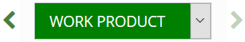

Apply Redactions
Redactions obscure the content of image files so that only appropriate
information is visible in the files you prepare for discovery. In , up to 99 redaction categories—with different colors and labels
for each—may be used. Redactions are viewed in as solid (if user has appropriate permissions.)
Redact Image Content
If you have sufficient permissions, redact information
in an image as follows:
-
For
a selected document, in the Review
pane’s Image tab, locate the information
to be redacted.
-
Click  next to the Redaction button
and select the needed redaction from the Redaction Category menu,
as shown in this figure. Your redaction type and redaction tool selection will persist when navigating to the next or previous documents and pages.
next to the Redaction button
and select the needed redaction from the Redaction Category menu,
as shown in this figure. Your redaction type and redaction tool selection will persist when navigating to the next or previous documents and pages.

-
If needed, click the button again to activate
the redaction action.
-
Point, click, and drag across the text or image area that is
to be redacted.
-
When the selection is complete, release the
mouse button. An example of redacted text is shown here:

-
Repeat these steps to apply other redactions.
-
When finished, click  or another button to stop the redaction activity.
or another button to stop the redaction activity.
Show Text Behind Redactions
For any or all redactions in the image, the text may be exposed by clicking  located to the right of the Redaction drop-down menu. When this icon is clicked, it changes to
located to the right of the Redaction drop-down menu. When this icon is clicked, it changes to  , Click again to hide the text. An example of exposed text behind a redaction is shown here:
, Click again to hide the text. An example of exposed text behind a redaction is shown here:

Your selected Redaction view setting (show/hide) will persist when navigating to the next or previous documents and pages.
Resize a Redaction
If you have sufficient permissions, change the size
of a redaction as follows:
-
For
a selected document, in the Review
pane’s Image tab, locate a redaction
to be resized.
-
Click the redaction to select it, then drag
an edge or a corner to resize it.
-
Repeat these steps to resize additional redactions.
Move a Redaction
If you have sufficient permissions, move a redaction
as follows:
-
For
a selected document, in the Review
pane’s Image tab, locate a
redaction to be moved.
-
Place the mouse pointer in the center of the
redaction and drag it to the needed location, then release the mouse button.
-
Repeat these steps to move additional redactions.
Delete a Redaction
|

|
Note: No warning message
or Undo function exists when deleting redactions. Make sure of
the selection before deleting.
|
If you have sufficient permissions, delete redactions
as follows:
-
For
a selected document, in the Review
pane’s Image tab, locate the redaction
to be deleted.
-
Left-click on the redaction. The selected redaction will be outlined in orange. Click  located in the upper right corner to delete the redaction.
located in the upper right corner to delete the redaction.
-
When finished, click
or another button to stop the redaction activity.
Navigating Redactions
If you have sufficient permissions, you can use the Redaction navigation buttons to quickly locate and navigate to redactions applied in the selected document. The Redaction navigation buttons allow you to move back and forth between individual redactions and pages with at least one redaction.
|
|
Note: If you have read-only permissions, you can use the redaction navigation buttons to navigate between pages with redactions, but not individual redactions.
|
There are two navigational buttons to choose from: previous and next.

When using the Redaction navigation buttons to move between redactions, the selected redaction will be outlined in orange.
|
|
Note: Redaction navigation does not distinguish between redaction types; when using the Redaction navigation buttons, the Redaction Category selected from the Redaction drop-down menu is irrelevant.
|
Redaction navigation aligns with a left to right reading direction, and is ordered by top-left positioning; the redaction applied first, located highest, and positioned in the most left corner will be selected and outlined first.
-
If you select an individual redaction in the document and then use the Redaction navigation buttons, Redaction navigation will start from the selected redaction on the page currently viewed. If you undo your selection of the individual redaction, Redaction navigation will proceed from the page currently viewed.
-
If you change pages in the document using the coding form/tag palette navigation toolbar , Redaction navigation will proceed from the page currently viewed.
How to navigate between redactions
To navigate between all redactions applied within a selected document, use the Redaction navigation buttons as follows:
-
For a selected document, in the Review pane's Image tab, locate the Redaction navigation buttons. Read the information below to learn more about navigational directions.
The following scenarios apply only if you havenot selected an individual redaction:
-
When viewing the first page of the document or the first page with at least one redaction, the previous button is disabled. Clicking the next button  will select the first redaction in the document. This may or may not be located on the page currently viewed.
will select the first redaction in the document. This may or may not be located on the page currently viewed.
-
When viewing the last page of the document or the last page with at least one redaction, the next button is disabled. Clicking the previous button  will select a redaction located prior. This may or may not be located on the page currently viewed.
will select a redaction located prior. This may or may not be located on the page currently viewed.

-
When viewing a page with at least one redaction, the next button will navigate to the first redaction in the document. This may or may not be located on the page currently viewed.
-
When viewing a page with at least one redaction, the previous button will navigate to the first redaction in the document. This may or may not be located on the page currently viewed.
The following scenarios apply if you have selected an individual redaction:
- When selecting the first redaction in the document, the previous button is disabled.
- When selecting the last redaction in the document, the next button is disabled.
-
When selecting an individual redaction on a page that has multiple redactions, the previous and next button will navigate to the previous or next redactions on that page, before navigating to the previous or next page(s) with redactions.
-
To navigate to the next or previous redaction and page(s) with at least one redaction, select the appropriate Redaction navigation button.
-
To resize, move, or delete a selected redaction, follow the steps outlined earlier in this article.
|
|
Note: If you delete the redaction that is selected, the next available redaction will be selected.
|